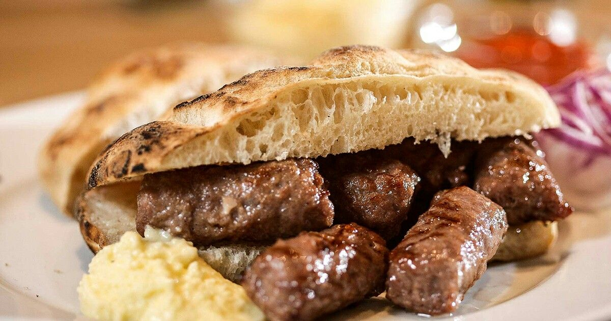

Šefov Ćevap

Šefov ćevap predstavlja posebnu varijaciju tradicionalnog balkanskog ćevapa, osmišljenu s ciljem da ponudi bogatiji i intenzivniji gastronomski doživljaj. Iako se oslanja na klasičnu recepturu mljevenog mesa, njegova posebnost leži u pažljivo biranim sastojcima i načinu pripreme koji naglašava sočnost, aromu i punoću okusa.
Za razliku od standardnih ćevapa, Šefov ćevap se često pravi od kombinacije više vrsta mesa, poput junećeg i jagnjećeg, uz dodatak tajnih začina koje svaki majstor roštilja čuva za sebe. Upravo ti začini daju ovom jelu prepoznatljiv karakter – blago dimljen, pun i zaokružen ukus koji se zadržava na nepcu.
Šefov ćevap se najčešće servira u somunu, uz priloge poput svježeg luka, kajmaka ili ajvara. Ono što ga izdvaja nije samo ukus, već i pažnja posvećena svakom detalju – od izbora mesa do završnog serviranja. Upravo zbog toga nosi naziv “šefov”, jer simbolizuje vrhunac kulinarskog umijeća i lični pečat majstora koji ga priprema.
Ovaj specijalitet nije samo obrok, već iskustvo koje spaja tradiciju i kreativnost, pružajući ljubiteljima roštilja nešto više od običnog ćevapa.